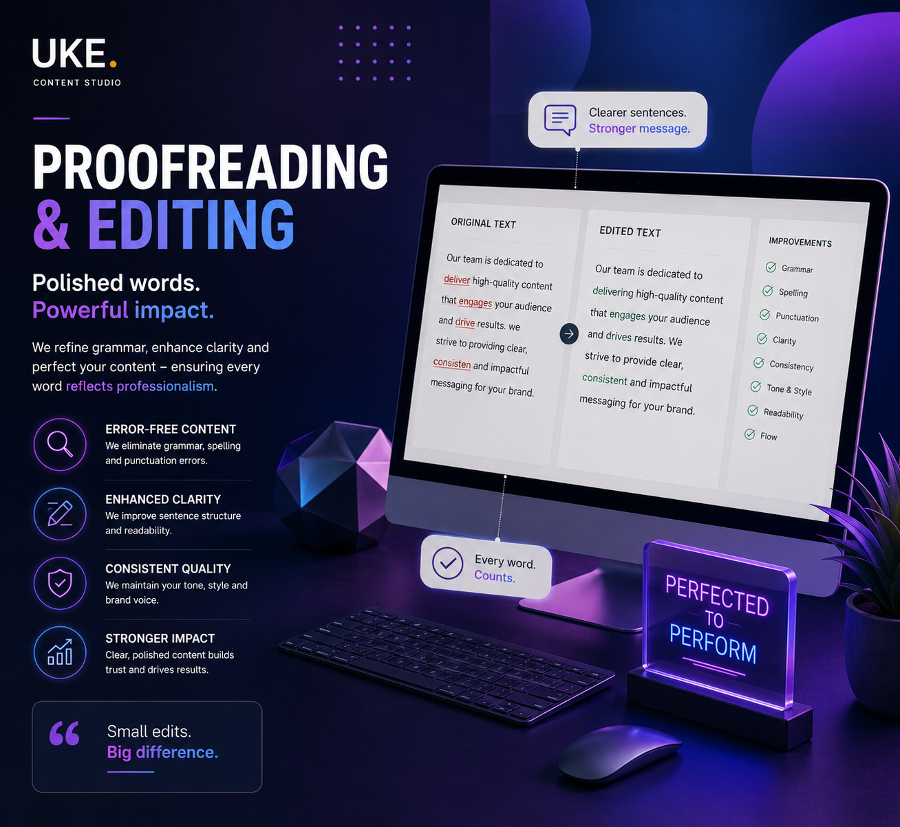
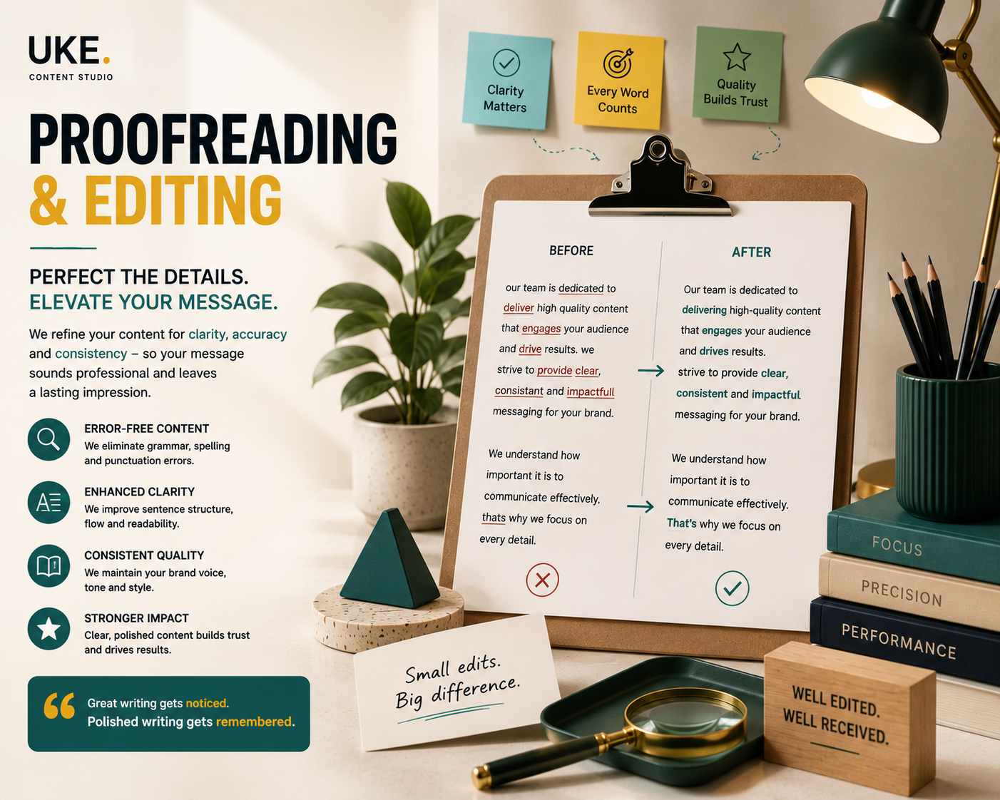

A draft can be factually correct and still feel difficult to read. Awkward transitions, repetitive phrasing, inconsistent terminology and small mechanical errors can weaken the reader’s confidence.
Professional editing addresses these issues before publication. It protects the original message while improving how clearly and effectively that message is delivered.
Proofreading and editing are not the same task
Proofreading focuses on surface-level accuracy. Editing examines the content more deeply.
Proofreading usually checks:
- Spelling and typographical errors.
- Grammar and punctuation.
- Capitalization and formatting.
- Missing words or duplicated text.
- Basic consistency issues.
Editing usually examines:
- Clarity and sentence structure.
- Organization and logical flow.
- Tone, style and audience suitability.
- Repetition, unnecessary detail and weak transitions.
- Terminology and message consistency.
A final proofread is important, but proofreading alone cannot solve structural or communication problems.

Editing improves clarity, rhythm and logical flow
Readers should not have to work harder than necessary to understand the message. Editing removes friction by simplifying unclear sentences and strengthening the relationship between ideas.
Clarify the main point
Every paragraph should have a clear purpose. If the main idea is hidden inside several supporting sentences, the structure may need to change.
Remove unnecessary repetition
Repetition can help emphasis, but accidental repetition makes the content feel longer and less confident.
Strengthen transitions
Good transitions explain how one idea connects to the next. They should support the logic instead of functioning as decorative phrases.
Vary sentence structure
A mixture of concise and longer sentences creates a more natural reading rhythm.
Editing does not replace the writer’s message. It removes the obstacles between that message and the reader.
Consistency makes content feel professional
Inconsistent writing creates subtle doubt. Readers may not identify every inconsistency consciously, but they notice when the content feels uneven.
Editors check consistency across:
- Spelling conventions and capitalization.
- Brand, product and technical terminology.
- Headings, bullets and formatting.
- Numbers, dates, abbreviations and units.
- Tone and level of formality.
- Calls to action and audience references.
Consistency becomes especially important when content is created by several contributors or produced across multiple channels.

Accurate editing protects credibility
Small errors can create a large impression. A typo in a headline, inconsistent product information or an unclear claim may cause readers to question the reliability of the entire page.
Check factual details
Editing should include verification of names, numbers, dates, specifications and references whenever accuracy matters.
Review claims carefully
Overstated or unsupported claims may create legal, ethical and trust problems. Stronger wording is not always more exaggerated wording.
Protect the intended meaning
Every revision should preserve the core information. A smoother sentence is not an improvement if it changes the facts.
Consider the reader’s interpretation
Ambiguous language can create expectations the business never intended. Editing identifies where wording may be misunderstood.
A practical professional editing process
1. Review the purpose and audience
Understand what the content needs to achieve before making detailed corrections.
2. Edit the structure first
Fix organization, missing information and repeated sections before polishing individual sentences.
3. Improve paragraph and sentence clarity
Simplify awkward wording, strengthen transitions and remove unnecessary phrases.
4. Apply consistency rules
Standardize terminology, formatting, tone and mechanical conventions.
5. Proofread the final version
Perform a separate final pass for grammar, spelling, punctuation and layout errors.
6. Check the published format
Errors can appear during copying, formatting or uploading. Review the content where the audience will actually see it.
Final proofreading and editing checklist
Purpose
Does the content clearly achieve its intended goal?
Structure
Are the ideas organized in a logical order?
Clarity
Are sentences direct, readable and easy to understand?
Consistency
Are terminology, tone and formatting consistent?
Accuracy
Have facts, numbers and claims been checked?
Final proofread
Has the finished version received a separate final review?
Professional editing gives strong ideas the clarity and consistency they need to create trust. The final result should feel effortless to read—even when the work behind it is detailed.